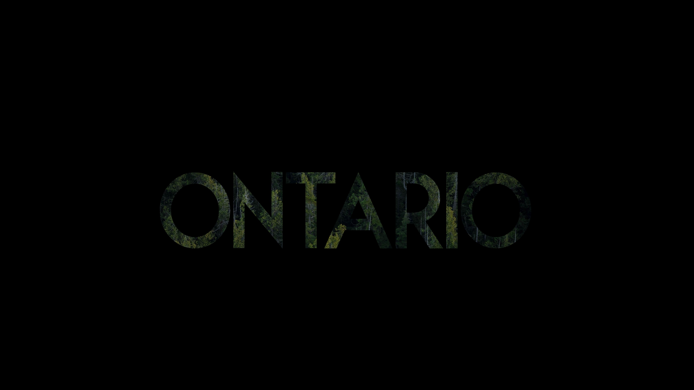

These are some of my Pixlr Images that I made during my gr 9 tech course
This project was originally meant to be removing objects from an image and then repairing the image but I decided to use some tools to also make it night time
This was a project where we had to take an image and then put a black background over it and then cut out the letters to make a place and I chose Ontario
Very funni link